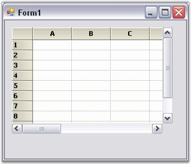
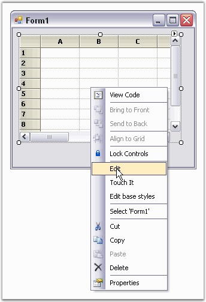
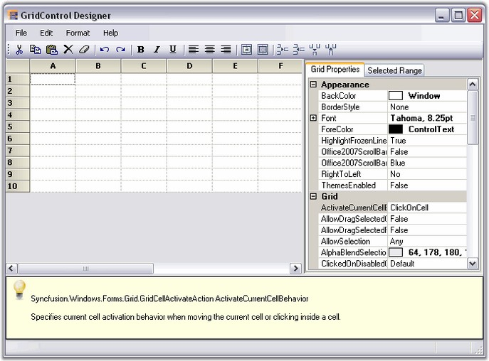
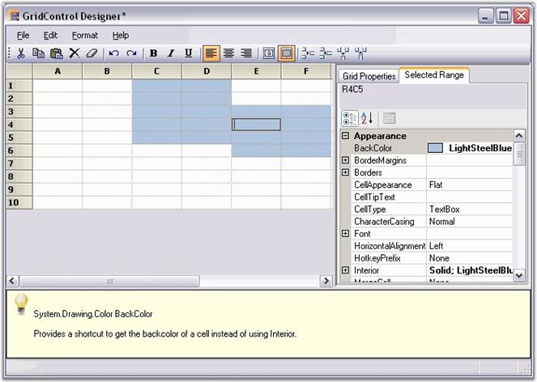

To make the task of designing the Grid control easier on a cell level, a new Designer Editor has been added. With the editor, the grid can be modified and saved (and loaded) to xml formatted files, or Soap formatted templates. There is also no longer a Toggle Interactive Mode design verb that was present in versions prior to 4.1.
To add a Grid Control to the Application
Following steps illustrate how to add a Grid control to your application.
1. Drag the GridControl component from the toolbox onto the form.

Figure 68: Grid Control
2. To edit the cell level properties of the grid (and also general Grid control properties), right-click anywhere in the Grid control and select Edit.

Figure 69: Select Edit option in the Grid Control Context Menu
3. This opens the GridControl Designer window. By using the GridControl Designer, the cell contents or styles, as well as general grid properties can be modified.

Figure 70: Property Editor
4. Single cells can be modified along with a selection of ranges. To do this, select a range of cells, and switch to the Selected Range tab to view the property grid for the selection.

Figure
71: Property Window
GridControl Designer also lets you to save/load xml formatted files, and Soap templates.
5. When the changes are complete, simply exit out of the designer. If changes have been made, you will be prompted to save the changes to the Grid control in the designer.
6. Click OK to apply the settings to the grid control.
See Also